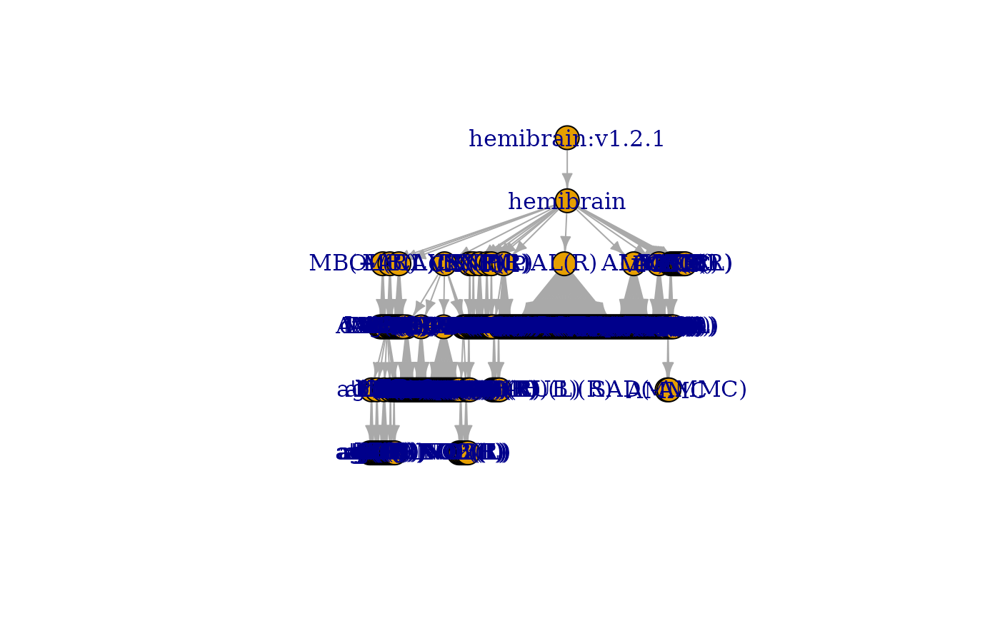
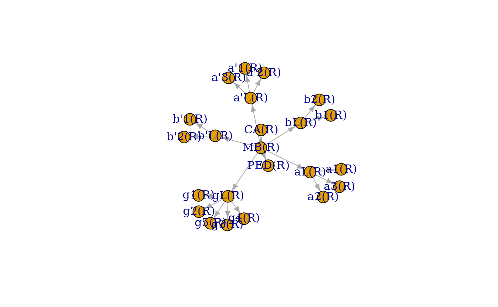

Get the region of interest (ROI) hierarchy in a dataset
neuprint_ROI_hierarchy(
root = NULL,
rval = c("edgelist", "graph"),
dataset = NULL,
conn = NULL,
...
)Character vector specifying a root node that defines a subgraph
of the ROI hierarchy. The default (root=NULL) will return the whole
hierarchy.
Whether to return an edge list data.frame (the default) or
an igraph object.
optional, a dataset you want to query. If NULL, the
default specified by your R environ file is used or, failing that the
current connection, is used. See neuprint_login for details.
optional, a neuprintr connection object, which also specifies the
neuPrint server. If NULL, the defaults set in your
.Rprofile or .Renviron are
used. See neuprint_login for details.
additional arguments passed to neuprint_fetch_custom
# \donttest{
g = neuprint_ROI_hierarchy(rval='graph')
igraph::plot.igraph(g, layout=igraph::layout_as_tree)

# just the Mushroom Body Nodes on right hand side
mbg=neuprint_ROI_hierarchy(root='MB(R)', rval='graph')
igraph::plot.igraph(mbg)

# find just the terminal nodes of the graph
mbterms=nat::endpoints(mbg)
mbterms
#> [1] "CA(R)" "PED(R)" "a'1(R)" "a'2(R)" "a'3(R)" "a1(R)" "a2(R)" "a3(R)"
#> [9] "g1(R)" "g2(R)" "g3(R)" "g4(R)" "g5(R)" "b'1(R)" "b'2(R)" "b1(R)"
#> [17] "b2(R)"
if (FALSE) {
# read in all the MB meshes
mbmeshes=sapply(mbterms, neuprint_ROI_mesh, simplify = FALSE)
# 3D plot in different colours
mapply(shade3d, mbmeshes, col=rainbow(length(mbmeshes)))
}
# }